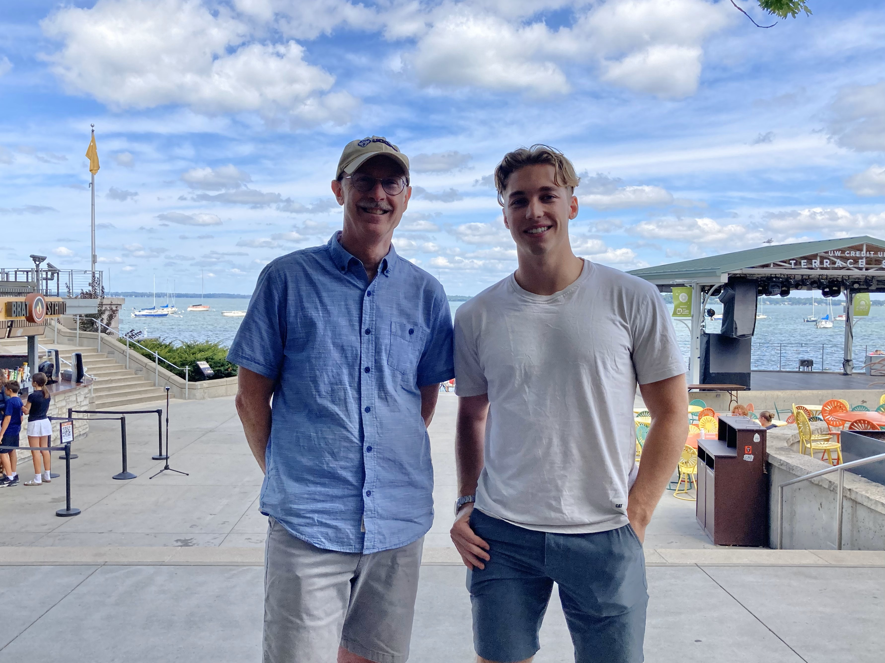
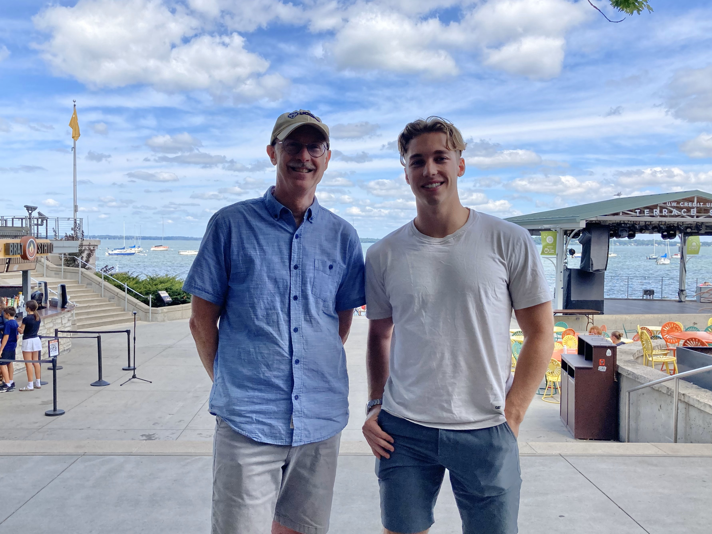

Collins Aerospace Co-op
Overview
9-month co-op at Collins Aerospace in Rockford, IL. As part of the sustainability department, I focused on production support for jet engine accessories, including pumps, gearboxes, and air turbine starters for both military and commercial applications.
Goals
- Significantly contribute to meaningful projects in the aerospace industry.
- Gain my first look at experimental data in a professional engineering environment.
- Learn from the 1000s of years of combined experience of fellow engineers at Collins Aerospace.
Key Accomplishments
- Data Automation: Developed a MATLAB script to streamline acceptance test procedure data processing for the F-35 engine actuation pump, reducing processing time from hours to seconds.
- Root Cause Investigation: Contributed to a root-cause investigation on a pressure regulating valve. Overlayed CMM inspection data and thermal/CFD analysis data to identify a potential cause.
- Engineering Changes: Completed over 20 change requests to improve reliability and/or producability across multiple programs.